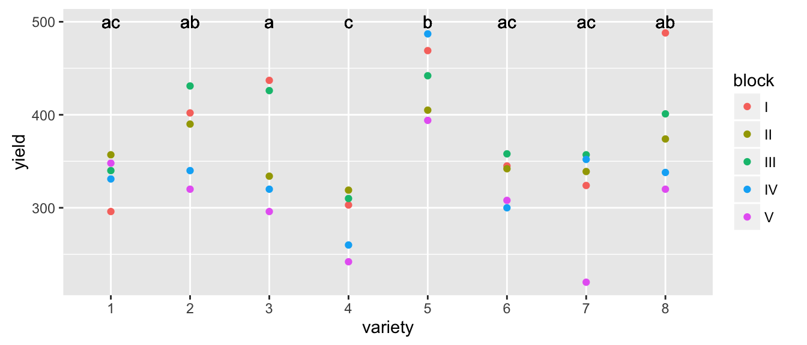

Chapter 11 Mixed Effects Models
library(faraway)
library(lme4)
library(tidyverse)
library(lsmeans)The assumption of independent observations is often not supported and dependent data arises in a wide variety of situations. The dependency structure could be very simple such as rabbits within a litter being correlated and the litters being independent. More complex hierarchies of correlation are possible. For example we might expect voters in a particular part of town (called a precinct) to vote similarly, and particular districts in a state tend to vote similarly as well, which might result in a precinct / district / state hierarchy of correlation.
Many of the designs mentioned in the Block Designs section could be similarly modeled using Mixed Effects Models. In many respects, the random effects structure provides a more flexible framework to consider many of the traditional experimental designs as well as many non-traditional designs with the benefit of more easily assessing variability at each hierarchical level.
Mixed effects models combine what we call “fixed” and “random” effects.
Fixed effects |
Unknown constants that we wish to estimate from the model and could be similarly estimated in subsequent experimentation. The research is interested in these particular levels. |
Random effects |
Random variables sampled from a population which cannot be observed in subsequent experimentation. The research is not interested in these particular levels, but rather how the levels vary from sample to sample. |
For example, in a rabbit study that examined the effect of diet on the growth of domestic rabbits and we had 10 litters of rabbits and used the 3 most similar from each litter to test 6 different diets. Here, the 6 different diets are fixed effects because they are not randomly selected from a population, these exact same diets can be further studied, and these are the diets we are interested it. The litters of rabbits and the individual rabbits are randomly selected from populations, cannot be exactly replicated in future studies, and we are not interested in the individual litters but rather what the variability is between individuals and between litters.
Often random effects are not of primary interest to the researcher, but must be considered. Often blocking variables are random effects because the arise from a random sample of possible blocks that are potentially available to the researcher.
Mixed effects models are models that have both fixed and random effects. We will first concentrate on understanding how to address a model with two sources error and then complicate the matter with fixed effects.
11.1 Review of Maximum Likelihood Methods
Recall that the likelihood function is the function links the model parameters to the data and is found by taking the probability density function and interpreting it as a function of the parameters instead of the a function of the data. Loosely, the probability function tells us what outcomes are most probable, with the height of the function telling us which values (or regions of values) are most probable given a set of parameter values. The higher the probability function, the higher the probability of seeing that value (or data in that region). The likelihood function turns that relationship around and tells us what parameter values are most likely to have generated the data we have, again with the parameter values with a higher likelihood value being more “likely”.
The likelihood function for a sample \(y_i \stackrel{iid}{\sim} N\left( 0, \sigma \right)\) is If we regard this as a function of our parameters \(\mu\) and \(\sigma^{2}\) then we have defined our likelihood function \[L \left(\mu,\sigma^{2}|y_{1},\dots,y_{n}\right)=\frac{1}{\left(2\pi\right)^{n/2}\left[\det\left(\boldsymbol{\Omega}\right)\right]^{1/2}}\exp\left[-\frac{1}{2}\left(\boldsymbol{y}-\boldsymbol{\mu}\right)^{T}\boldsymbol{\Omega}^{-1}\left(\boldsymbol{y}-\boldsymbol{\mu}\right)\right]\]
where the variance/covariance matrix is \(\boldsymbol{\Omega}=\sigma I_n\).
We can use to this equation to find the maximum likelihood estimators by either taking the derivatives and setting them equal to zero and solving for the parameters or by using numerical methods. In the normal case, we can find the maximum likelihood estimators (MLEs) using the derivative trick and we find that \[\hat{\mu}_{MLE}=\hat{y}=\bar{y}\] and \[\hat{\sigma}_{MLE}^{2}=\frac{1}{n}\sum_{i=1}^{n}\left(y_{i}-\hat{y}\right)^{2}\] and we notice that this is not our usual estimator \(\hat{\sigma}^{2}=s^{2}\) where \(s^{2}\) is the sample variance. It turns out that the MLE estimate of \(\sigma^{2}\) is biased (the correction is to divide by \(n-1\) instead of \(n\)). This is normally not an issue if our sample size is large, but with a small sample, the bias is not insignificant.
Notice if we happened to know that \(\mu=0\), then we could use \[\hat{\sigma}_{MLE}^{2}=\frac{1}{n}\sum_{i=1}^{n}y_{i}^{2}\] and this would be unbiased for \(\sigma^{2}\).
In general (a not just in the normal case above) the Likelihood Ratio Test (LRT) provides a way for us to compare two nested models. Given \(m_{0}\) which is a simplification of \(m_{1}\) then we could calculate the likelihoods functions of the two models \(L\left(\boldsymbol{\theta}_{0}\right)\) and \(L\left(\boldsymbol{\theta}_{1}\right)\) where \(\boldsymbol{\theta}_{0}\) is a vector of parameters for the null model and \(\boldsymbol{\theta}_{1}\) is a vector of parameter for the alternative. Let \(\hat{\boldsymbol{\theta}}_{0}\) be the maximum likelihood estimators for the null model and \(\hat{\boldsymbol{\theta}}_{1}\) be the maximum likelihood estimators for the alternative. Finally we consider the value of \[\begin{aligned} D &= -2*\log\left[\frac{L\left(\hat{\boldsymbol{\theta}}_{0}\right)}{L\left(\hat{\boldsymbol{\theta}}_{1}\right)}\right] \\ &= -2\left[\log L\left(\hat{\boldsymbol{\theta}}_{0}\right)-\log L\left(\hat{\boldsymbol{\theta}}_{1}\right)\right] \end{aligned}\]
Under the null hypothesis that \(m_{0}\) is the true model, the \(D\stackrel{\cdot}{\sim}\chi_{p_{1}-p_{0}}^{2}\) where \(p_{1}-p_{0}\) is the difference in number of parameters in the null and alternative models. That is to say that asymptotically \(D\) has a Chi-squared distribution with degrees of freedom equal to the difference in degrees of freedom of the two models.
We could think of \(L\left(\hat{\boldsymbol{\theta}}_{0}\right)\) as the maximization of the likelihood when some parameters are held constant (at zero) and all the other parameters are vary. But we are not required to hold it constant at zero. We could chose any value of interest and perform a LRT.
Because we often regard a confidence interval as the set of values that would not be rejected by a hypothesis test, we could consider a sequence of possible values for a parameter and figure out which would not be rejected by the LRT. In this fashion we can construct confidence intervals for parameter values.
Unfortunately all of this hinges on the asymptotic distribution of \(D\) and often this turns out to be a poor approximation. In simple cases more exact tests can be derived (for example the F-tests we have used prior) but sometimes nothing better is currently known. Another alternative is to use permutation methods.
11.2 1-way ANOVA with a random effect
We first consider the simplest model with two sources of variability, a 1-way ANOVA with a random factor covariate \[y_{ij}=\mu+\gamma_{i}+\epsilon_{ij}\] where \(\gamma_{i}\stackrel{iid}{\sim}N\left(0,\sigma_{\gamma}^{2}\right)\) and \(\epsilon_{ij}\stackrel{iid}{\sim}N\left(0,\sigma_{\epsilon}^{2}\right)\). This model could occur, for example, when looking at the adult weight of domestic rabbits where the random effect is the effect of litter and we are interested in understanding how much variability there is between litters \(\left(\sigma_{\gamma}^{2}\right)\) and how much variability there is within a litter \(\left(\sigma_{\epsilon}^{2}\right)\). Another example is the the creation of computer chips. Here a single waffer of silicon is used to create several chips and we might have waffer-to-waffer variability and then within a waffer, you have chip-to-chip variability.
First we should think about what the variances and covariances are for any two observations. \[\begin{aligned} Var\left(y_{ij}\right) &= Var\left(\mu+\gamma_{i}+\epsilon_{ij}\right) \\ &= Var\left(\mu\right)+Var\left(\gamma_{i}\right)+Var\left(\epsilon_{ij}\right) \\ &= 0+\sigma_{\gamma}^{2}+\sigma_{\epsilon}^{2} \end{aligned}\] and \(Cov\left(y_{ij},y_{ik}\right)=\sigma_{\gamma}^{2}\) because the two observations share the same litter \(\gamma_{i}\). For two observations in different litters, the covariance is 0. These relationships induce a correlation on observations within the same litter of \[\rho=\frac{\sigma_{\gamma}^{2}}{\sigma_{\gamma}^{2}+\sigma_{\epsilon}^{2}}\]
For example, suppose that we have \(I=3\) litters and in each litter we have \(J=3\) rabbits per litter. Then the variance-covariance matrix looks like \[\boldsymbol{\Omega} = \left[\begin{array}{ccccccccc} \sigma_{\gamma}^{2}+\sigma_{\epsilon}^{2} & \sigma_{\gamma}^{2} & \sigma_{\gamma}^{2} & . & . & . & . & . & .\\ \sigma_{\gamma}^{2} & \sigma_{\gamma}^{2}+\sigma_{\epsilon}^{2} & \sigma_{\gamma}^{2} & . & . & . & . & . & .\\ \sigma_{\gamma}^{2} & \sigma_{\gamma}^{2} & \sigma_{\gamma}^{2}+\sigma_{\epsilon}^{2} & . & . & . & . & . & .\\ . & . & . & \sigma_{\gamma}^{2}+\sigma_{\epsilon}^{2} & \sigma_{\gamma}^{2} & \sigma_{\gamma}^{2} & . & . & .\\ . & . & . & \sigma_{\gamma}^{2} & \sigma_{\gamma}^{2}+\sigma_{\epsilon}^{2} & \sigma_{\gamma}^{2} & . & . & .\\ . & . & . & \sigma_{\gamma}^{2} & \sigma_{\gamma}^{2} & \sigma_{\gamma}^{2}+\sigma_{\epsilon}^{2} & . & . & .\\ . & . & . & . & . & . & \sigma_{\gamma}^{2}+\sigma_{\epsilon}^{2} & \sigma_{\gamma}^{2} & \sigma_{\gamma}^{2}\\ . & . & . & . & . & . & \sigma_{\gamma}^{2} & \sigma_{\gamma}^{2}+\sigma_{\epsilon}^{2} & \sigma_{\gamma}^{2}\\ . & . & . & . & . & . & \sigma_{\gamma}^{2} & \sigma_{\gamma}^{2} & \sigma_{\gamma}^{2}+\sigma_{\epsilon}^{2} \end{array}\right]\]
Substituting this new variance-covariance matrix into our likelihood function, we now have a likelihood function which we can perform our usual MLE tricks with.
In the more complicated situation where we have a full mixed effects model, we could write \[\boldsymbol{y}=\boldsymbol{X}\boldsymbol{\beta}+\boldsymbol{Z}\boldsymbol{\gamma}+\boldsymbol{\epsilon}\] where \(\boldsymbol{X}\) is the design matrix for the fixed effects, \(\boldsymbol{\beta}\) is the vector of fixed effect coefficients, \(\boldsymbol{Z}\) is the design matrix for random effects, \(\boldsymbol{\gamma}\) is the vector of random effects such that \(\gamma_{i}\stackrel{iid}{\sim}N\left(0,\sigma_{\gamma}^{2}\right)\) and finally \(\boldsymbol{\epsilon}\) is the vector of error terms such that \(\epsilon_{ij}\stackrel{iid}{\sim}N\left(0,\sigma_{\epsilon}^{2}\right)\). Notice in our rabbit case
\[\boldsymbol{Z}=\left[\begin{array}{ccc} 1 & \cdot & \cdot\\ 1 & \cdot & \cdot\\ 1 & \cdot & \cdot\\ \cdot & 1 & \cdot\\ \cdot & 1 & \cdot\\ \cdot & 1 & \cdot\\ \cdot & \cdot & 1\\ \cdot & \cdot & 1\\ \cdot & \cdot & 1 \end{array}\right]\;\;\;\;ZZ^{T}=\left[\begin{array}{ccccccccc} 1 & 1 & 1 & \cdot & \cdot & \cdot & \cdot & \cdot & \cdot\\ 1 & 1 & 1 & \cdot & \cdot & \cdot & \cdot & \cdot & \cdot\\ 1 & 1 & 1 & \cdot & \cdot & \cdot & \cdot & \cdot & \cdot\\ \cdot & \cdot & \cdot & 1 & 1 & 1 & \cdot & \cdot & \cdot\\ \cdot & \cdot & \cdot & 1 & 1 & 1 & \cdot & \cdot & \cdot\\ \cdot & \cdot & \cdot & 1 & 1 & 1 & \cdot & \cdot & \cdot\\ \cdot & \cdot & \cdot & \cdot & \cdot & \cdot & 1 & 1 & 1\\ \cdot & \cdot & \cdot & \cdot & \cdot & \cdot & 1 & 1 & 1\\ \cdot & \cdot & \cdot & \cdot & \cdot & \cdot & 1 & 1 & 1 \end{array}\right]\]
which makes it easy to notice \[\boldsymbol{\Omega}=\sigma_{\gamma}^{2}\boldsymbol{Z}\boldsymbol{Z}^{T}+\sigma_{\epsilon}^{2}\boldsymbol{I}\]
In practice we tend to have relatively small numbers of block parameters and thus have a small number of observations in which to estimate \(\sigma_{\gamma}^{2}\) which means that the biased nature of MLE estimates will be suboptimal. If we knew that \(\boldsymbol{X}\boldsymbol{\beta}=\boldsymbol{0}\) we could use that fact and have an unbiased estimate of our variance parameters. Because \(\boldsymbol{X}\) is known, we can find linear functions \(\boldsymbol{k}\) such that \(\boldsymbol{k}^{T}\boldsymbol{X}=0\). We can form a matrix \(\boldsymbol{K}\) that represents all of these possible transformations and we notice that \[\boldsymbol{K}^{T}\boldsymbol{y} \sim N \left( \boldsymbol{K}^{T}\boldsymbol{X\beta}, \, \boldsymbol{K}^{T}\boldsymbol{\Omega}\boldsymbol{K}\right) = N\left( \boldsymbol{0}, \boldsymbol{K}^{T}\boldsymbol{\Omega}\boldsymbol{K}\right)\] and perform our maximization on this transformed set of data. Once we have our unbiased estimates of \(\sigma_{\gamma}^{2}\) and \(\sigma_{\epsilon}^{2}\), we can substitute these back into the untransformed likelihood function and find the MLEs for \(\boldsymbol{\beta}\). This process is called Restricted Maximum Likelihood (REML) and is generally preferred over the variance component estimates found simply maximizing the regular likelihood function. As usual, if our experiment is balanced these complications aren’t necessary as the REML estimates of \(\boldsymbol{\beta}\) are usually the same as the ML estimates.
Our first example comes from an experiment to test the paper brightness as affected by the shift operator. The data has 20 observations with 4 different operators. Each operator had 5 different observations made. The data set is pulp in the package faraway. We will first analyze this using a fixed-effects one-way ANOVA, but we will use a different model representation. Instead of using the first operator as the reference level, we will use the sum-to-zero constraint (to make it easier to compare with the output of the random effects model).
library(faraway)
data(pulp)
# set the contrasts to sum-to-zero constraint
op <- options(contrasts=c('contr.sum', 'contr.poly'))
m <- aov(bright ~ operator, data=pulp)
summary(m)## Df Sum Sq Mean Sq F value Pr(>F)
## operator 3 1.34 0.4467 4.204 0.0226 *
## Residuals 16 1.70 0.1062
## ---
## Signif. codes: 0 '***' 0.001 '**' 0.01 '*' 0.05 '.' 0.1 ' ' 1coef(m)## (Intercept) operator1 operator2 operator3
## 60.40 -0.16 -0.34 0.22The sum-to-zero constraint forces the operator parameters to sum to zero so we can find the value of the fourth operator as operator4 = -(-0.16-0.34+0.22) = 0.28
To fit the random effects model we will use the package lme4 which stands for Linear Mixed Effects and the 4 represents that the package is written in the S4 dialect of R (which means a few things will be new to us).
m2 <- lmer( bright ~ 1 + (1|operator), data=pulp )
summary(m2)## Linear mixed model fit by REML ['lmerMod']
## Formula: bright ~ 1 + (1 | operator)
## Data: pulp
##
## REML criterion at convergence: 18.6
##
## Scaled residuals:
## Min 1Q Median 3Q Max
## -1.4666 -0.7595 -0.1244 0.6281 1.6012
##
## Random effects:
## Groups Name Variance Std.Dev.
## operator (Intercept) 0.06808 0.2609
## Residual 0.10625 0.3260
## Number of obs: 20, groups: operator, 4
##
## Fixed effects:
## Estimate Std. Error t value
## (Intercept) 60.4000 0.1494 404.2Notice that the estimate of the fixed effect (the overall mean) is the same in the fixed-effects ANOVA and in the mixed model. However the fixed effects ANOVA estimates the effect of each operator while the mixed model is interested in estimating the variance between operators. In the model statement the (1|operator) denotes the random effect and this notation tells us to fit a model with a random intercept term for each operator. Here the variance associated with the operators is \(\sigma_{\gamma}^{2}=0.068\) while the “pure error” is \(\sigma_{\epsilon}^{2}=0.106\). The column for standard deviation is not the variability associated with our estimate, but is simply the square-root of the variance terms \(\sigma_{\gamma}\) and \(\sigma_{\epsilon}\). This was fit using the REML method.
We might be interested in the estimated effect of each operator
ranef(m2)## $operator
## (Intercept)
## a -0.1219403
## b -0.2591231
## c 0.1676679
## d 0.2133955These effects are smaller than the values we estimated in the fixed effects model due to distributional assumption that penalizes large deviations from the mean. In general, the estimated random effects are of smaller magnitude than the effect size estimated using a fixed effect model.
# reset the contrasts to the default
options(contrasts=c("contr.treatment", "contr.poly" ))11.3 Blocks as Random Variables
Blocks are properties of experimental designs and usually we are not interested in the block levels per se but need to account for the variability introduced by them.
Recall the agriculture experiment in the dataset oatvar from the faraway package. We had 8 different varieties of oats and we had 5 different fields (which we called blocks). Because of limitations on how we plant, we could only divide the blocks into 8 plots and in each plot we planted one of the varieties.
library(faraway)
ggplot(oatvar, aes(y=yield, x= variety)) +
geom_point() +
facet_wrap(~block, labeller=label_both)
In this case, we don’t really care about these particular fields (blocks) and would prefer to think about these as a random sample of fields that we might have used in our experiment.
model.0 <- lmer( yield ~ (1|block), data=oatvar)
model.1 <- lmer( yield ~ variety + (1|block), data=oatvar)
summary(model.1)## Linear mixed model fit by REML ['lmerMod']
## Formula: yield ~ variety + (1 | block)
## Data: oatvar
##
## REML criterion at convergence: 341.4
##
## Scaled residuals:
## Min 1Q Median 3Q Max
## -1.7135 -0.5503 -0.1280 0.4862 2.1756
##
## Random effects:
## Groups Name Variance Std.Dev.
## block (Intercept) 876.5 29.61
## Residual 1336.9 36.56
## Number of obs: 40, groups: block, 5
##
## Fixed effects:
## Estimate Std. Error t value
## (Intercept) 334.40 21.04 15.894
## variety2 42.20 23.12 1.825
## variety3 28.20 23.12 1.219
## variety4 -47.60 23.12 -2.058
## variety5 105.00 23.12 4.541
## variety6 -3.80 23.12 -0.164
## variety7 -16.00 23.12 -0.692
## variety8 49.80 23.12 2.154
##
## Correlation of Fixed Effects:
## (Intr) varty2 varty3 varty4 varty5 varty6 varty7
## variety2 -0.550
## variety3 -0.550 0.500
## variety4 -0.550 0.500 0.500
## variety5 -0.550 0.500 0.500 0.500
## variety6 -0.550 0.500 0.500 0.500 0.500
## variety7 -0.550 0.500 0.500 0.500 0.500 0.500
## variety8 -0.550 0.500 0.500 0.500 0.500 0.500 0.500We start with the Random effects. This section shows us the block-to-block variability (and the square root of that, the Standard Deviation) as well as the “pure-error”, labeled residuals, which is an estimate of the variability associated with two different observations (after the difference in variety is accounted for) planted within the same block. For this we see that block-to-block variability is only slightly smaller than the within block variability.
Why do we care about this? This actually tells us quite a lot about the spatial variability. Because yield is affected by soil nutrients, micro-climate, soil water availability, etc, I expect that two identical seedlings planted in slightly different conditions will have slightly different yields. By examining how the yield changes over small distances (the residual within block variability) vs how it changes over long distances (block to block variability) we can get a sense as to the scale at which these background lurking processes operate.
Next we turn to the fixed effects. These will be the offsets from the reference group, as we’ve typically worked with. Here we see that varieties 2,5, and 8 are the best performers (relative to variety 1), but we don’t have any p-values denoting if these differences could be due to random chance or if the differences are statistical significant. The reason for this is that in mixed models it is not always clear what the appropriate degrees of freedom are for the residuals, and therefore we don’t know what the appropriate t-distribution is to compare the t-values to. In simple balanced designs the degrees of freedom can be calculated, but in complicated unbalanced designs the appropriate degrees of freedom is not known and all proposed heuristic methods (including what is calculated by SAS) can fail spectacularly in certain cases. The authors of lme4 are adamant that until robust methods are developed, they prefer to not calculate any p-values. A previous version of this software (package nlme) will produce p-values but at the cost of flexibility in the types of mixed models that can be fit.
We can force R to give us a the Likelihood Ratio Test (LRT) to see if variety is statistically significant by comparing the appropriate models. Notice that R has noticed that we fit both models using Restricted Maximum Likelihood and it is inappropriate to compare models with different fixed effects (because the \(\boldsymbol{K}\) matices are different) and it has refit the models appropriately.
anova(model.0, model.1)## refitting model(s) with ML (instead of REML)## Data: oatvar
## Models:
## model.0: yield ~ (1 | block)
## model.1: yield ~ variety + (1 | block)
## Df AIC BIC logLik deviance Chisq Chi Df Pr(>Chisq)
## model.0 3 446.94 452.01 -220.47 440.94
## model.1 10 421.67 438.56 -200.84 401.67 39.27 7 1.736e-06 ***
## ---
## Signif. codes: 0 '***' 0.001 '**' 0.01 '*' 0.05 '.' 0.1 ' ' 1Using the LRT test (and difference of AIC values), we see the effect of variety is statistically signficant.
Now that we are certain that there are differences among the varieties, we should look at all of the pairwise contrasts among the variety levels. Unfortunately TukeyHSD doesn’t work with objects created by lme so we have to turn to another package. In this case, we could use either multcomp and build the contrast vectors \(\boldsymbol{c}\) that we used previously or we could use the package lsmeans, which automates much of this.
lsmeans( model.1, pairwise ~ variety)## Loading required namespace: pbkrtest## $lsmeans
## variety lsmean SE df lower.CL upper.CL
## 1 334.4 21.03996 15.25 289.6196 379.1804
## 2 376.6 21.03996 15.25 331.8196 421.3804
## 3 362.6 21.03996 15.25 317.8196 407.3804
## 4 286.8 21.03996 15.25 242.0196 331.5804
## 5 439.4 21.03996 15.25 394.6196 484.1804
## 6 330.6 21.03996 15.25 285.8196 375.3804
## 7 318.4 21.03996 15.25 273.6196 363.1804
## 8 384.2 21.03996 15.25 339.4196 428.9804
##
## Confidence level used: 0.95
##
## $contrasts
## contrast estimate SE df t.ratio p.value
## 1 - 2 -42.2 23.12491 28 -1.825 0.6095
## 1 - 3 -28.2 23.12491 28 -1.219 0.9192
## 1 - 4 47.6 23.12491 28 2.058 0.4638
## 1 - 5 -105.0 23.12491 28 -4.541 0.0022
## 1 - 6 3.8 23.12491 28 0.164 1.0000
## 1 - 7 16.0 23.12491 28 0.692 0.9966
## 1 - 8 -49.8 23.12491 28 -2.154 0.4078
## 2 - 3 14.0 23.12491 28 0.605 0.9985
## 2 - 4 89.8 23.12491 28 3.883 0.0116
## 2 - 5 -62.8 23.12491 28 -2.716 0.1595
## 2 - 6 46.0 23.12491 28 1.989 0.5062
## 2 - 7 58.2 23.12491 28 2.517 0.2295
## 2 - 8 -7.6 23.12491 28 -0.329 1.0000
## 3 - 4 75.8 23.12491 28 3.278 0.0491
## 3 - 5 -76.8 23.12491 28 -3.321 0.0446
## 3 - 6 32.0 23.12491 28 1.384 0.8569
## 3 - 7 44.2 23.12491 28 1.911 0.5549
## 3 - 8 -21.6 23.12491 28 -0.934 0.9798
## 4 - 5 -152.6 23.12491 28 -6.599 <.0001
## 4 - 6 -43.8 23.12491 28 -1.894 0.5658
## 4 - 7 -31.6 23.12491 28 -1.366 0.8644
## 4 - 8 -97.4 23.12491 28 -4.212 0.0051
## 5 - 6 108.8 23.12491 28 4.705 0.0014
## 5 - 7 121.0 23.12491 28 5.232 0.0003
## 5 - 8 55.2 23.12491 28 2.387 0.2859
## 6 - 7 12.2 23.12491 28 0.528 0.9994
## 6 - 8 -53.6 23.12491 28 -2.318 0.3194
## 7 - 8 -65.8 23.12491 28 -2.845 0.1237
##
## P value adjustment: tukey method for comparing a family of 8 estimatesThis looks remarkably similar to the output from TukeyHSD and just as confusing. Ideally the function make_TukeyHSD_letters() could be modified to handle this model as well.
library(stringr)## Warning: package 'stringr' was built under R version 3.2.5##
## Attaching package: 'stringr'## The following object is masked _by_ '.GlobalEnv':
##
## fruit#' Create a data frame with significant groupings
#'
#' This function runs TukeyHSD on the input model and then creates a data frame
#' with a column for the factor and a second for the Significance Group
#'
#' @param model The output of a lm(), aov(), or lme().
#' @param variable The variable of interest.
#' @output A data frame with a column for factor and another for the signicance group.
#' @examples
#' model <- lm( breaks ~ wool + tension, data=warpbreaks )
#' make_TukeyHSD_letters(model, ~ wool)
#' make_TukeyHSD_letters(model, ~ tension)
#' make_TukeyHSD_letters(model, ~ wool+tension)
make_TukeyHSD_letters <- function(model, formula){
formula2 <- update.formula( formula, pairwise ~ .)
temp <- lsmeans(model, formula2)$contrasts %>%
summary()
temp2 <- temp$p.value
names(temp2) <- temp$contrast
temp <- temp2 %>% vec2mat(sep=' - ') %>% multcompLetters()
out <- data.frame(group = names(temp$Letters), SigGroup=temp$Letters)
colnames(out)[1] <- Reduce(paste, deparse(formula)) %>% str_replace(fixed('~'),'')
rownames(out) <- NULL
out
} make_TukeyHSD_letters(model.1, ~variety)## variety SigGroup
## 1 1 ab
## 2 2 ac
## 3 3 a
## 4 4 b
## 5 5 c
## 6 6 ab
## 7 7 ab
## 8 8 acAs usual we’ll join this information into the original data table and then make a nice summary graph.
oatvar <- oatvar %>%
left_join( make_TukeyHSD_letters(model.1, ~variety) ) %>%
mutate(LetterHeight=500)## Joining, by = c("variety", "SigGroup")ggplot(oatvar, aes(x=variety, y=yield)) +
geom_point(aes(color=block)) +
geom_text(aes(label=SigGroup, y=LetterHeight))
We’ll consider a second example using data from the pharmaceutical industry. We are interested in 4 different processes (our treatment variable) used in the biosynthesis and purification of the drug penicillin. The biosynthesis requires a nutrient source (corn steep liquor) as a nutrient source for the fungus and the nutrient source is quite variable. Each batch of the nutrient is is referred to as a ‘blend’ and each blend is sufficient to create 4 runs of penicillin. We avoid confounding our biosynthesis methods with the blend by using a Randomized Complete Block Design and observing the yield of penicillin from each of the four methods (A,B,D, and D) in each blend.
data(penicillin)
ggplot(penicillin, aes(y=yield, x=treat)) +
geom_point() +
facet_wrap( ~ blend, ncol=5)
It looks like there is definately a Blend effect (e.g. Blend1 is much better than Blend5) but it isn’t clear that there is a treatment effect.
model.0 <- lmer(yield ~ 1 + (1 | blend), data=penicillin)
model.1 <- lmer(yield ~ treat + (1 | blend), data=penicillin)
anova(model.0, model.1)## refitting model(s) with ML (instead of REML)## Data: penicillin
## Models:
## model.0: yield ~ 1 + (1 | blend)
## model.1: yield ~ treat + (1 | blend)
## Df AIC BIC logLik deviance Chisq Chi Df Pr(>Chisq)
## model.0 3 127.33 130.31 -60.662 121.33
## model.1 6 129.28 135.25 -58.639 117.28 4.0474 3 0.2564It looks like we don’t have a significant effect of the treatments. Next we’ll examine the simple model to understand the variability.
summary(model.0)## Linear mixed model fit by REML ['lmerMod']
## Formula: yield ~ 1 + (1 | blend)
## Data: penicillin
##
## REML criterion at convergence: 118.4
##
## Scaled residuals:
## Min 1Q Median 3Q Max
## -1.5526 -0.7310 -0.0789 0.5007 1.8241
##
## Random effects:
## Groups Name Variance Std.Dev.
## blend (Intercept) 11.57 3.401
## Residual 19.73 4.442
## Number of obs: 20, groups: blend, 5
##
## Fixed effects:
## Estimate Std. Error t value
## (Intercept) 86.000 1.817 47.34We see that the noise is more in the within blend rather than the between blends. If my job were to understand the variability and figure out how to improve production, this suggests that understanding the both how variability is introduced at the blend level and at the run level. The run level has slightly more variability, so I might start there.
11.4 Nested Effects
When the levels of one factor vary only within the levels of another factor, that factor is said to be nested. For example, when measuring the performance of workers at several job locations, if the workers only work at one site, then the workers are nested within site. If the workers work at more than one location, we would say that workers are crossed with site.